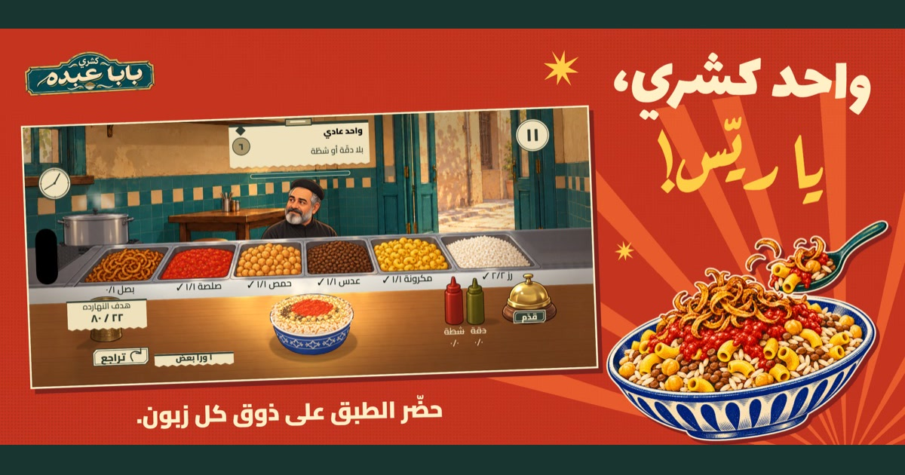

ملاحظات الإصدار · كشري بابا عبده للآيفون · Read in English
ملاحظات إصدار «كشري بابا عبده» 1.1: واجهة جديدة ومبدّل اللغة الفوري
تحديث 1.1 من «كشري بابا عبده» متاح الآن على App Store بواجهة النحاس والطاووس الجديدة، ومبدّل فوري بين العربية والإنجليزية، ووضوح أكبر لبداية اليوم الأول.

وصل إصدار 1.1 من «كشري بابا عبده» إلى App Store. بعد إطلاق 1.0، يركّز هذا التحديث على صقل الواجهة وسلاسة القراءة والتبديل الفوري بين العربية والإنجليزية من جوه اللعبة.
واجهة النحاس والطاووس
القوائم والبطاقات والأزرار في الشاشة الرئيسية والإعدادات وإضافات المحل وألبوم الاستيكرات أصبحت الآن بهوية موحّدة:
- بطاقات أوضاع اللعب في الرئيسية بتصميم مضغوط من سطرين مع ميداليات ذهبية وأيقونات واضحة.
- إبراز بطاقة استكمال اليوم بعنوان ذهبي مع خلفية داكنة أنعم تحت النوافذ المنبثقة.
- استجابة لمس واهتزازات خفيفة مع ضغط الأزرار.
التبديل الفوري بين العربية والإنجليزية
تقدر الآن تبدّل بين العربية والإنجليزية مباشرة من جوه اللعبة مع حفظ اختيارك:
- اضغط على زر EN / عربي في أعلى الشاشة الرئيسية، أو بدّل اللغة من الإعدادات.
- التغيير يحدّث الواجهة واتجاه القوائم وسبورة الأسعار ولافتة المحل والاستيكرات فورًا.
- ضبط محاذاة المفاتيح وعناوين الشاشات وقائمة الإيقاف المؤقت في الوضع الإنجليزي LTR.
وضوح اليوم الأول وتباين الدقّة والشطة
- وضوح بداية اليوم الأول: إخفاء شريط الوقت الفارغ في أول طلب تعليمي غير محدّد بوقت، وتضييق مسافات العرض.
- تباين أوضح للدقّة والشطة: خلفيات واضحة تحت أسماء زجاجات الشطة والدقّة لسهولة القراءة السريعة أثناء اللعب.
- تحسين إرشاد البداية: صياغة أوضح للخطوات الأولى بالعربية والإنجليزية.
تحسينات الاستيكرات والمشاركة
ألبوم استيكرات المحل أصبح يعرض الاستيكرات الثمانية في شبكة متساوية الارتفاع (4×2) مع تحسين ظهور خيارات المشاركة لواتساب والرسائل.
أسئلة
هل أقدر أبدّل اللغة بين العربية والإنجليزية جوه اللعبة؟ نعم. اضغط على زر اللغة في أعلى الشاشة الرئيسية أو افتح الإعدادات واختار صف اللغة عشان تبدّل فورًا بين العربية والإنجليزية.
هل «كشري بابا عبده» 1.1 مجانية؟ نعم. اللعبة مجانية على الآيفون ومن غير إعلانات أو مشتريات داخل التطبيق، وكل الفلوس اللي بتكسبها وتصرفها جوه المحل فقط.